A simulated TurtleBot3 drives a 5-goal patrol using the ROS 2 Navigation2 stack. Three obstacles that are not on the map Nav2 was given sit on the routes it would otherwise take, and a fourth is dropped right in front of the robot mid-run. Nav2 only learns about them through its LiDAR, marks them in its costmaps and plans around them. No custom navigation code: the work is integration, configuration and measuring what actually happens.
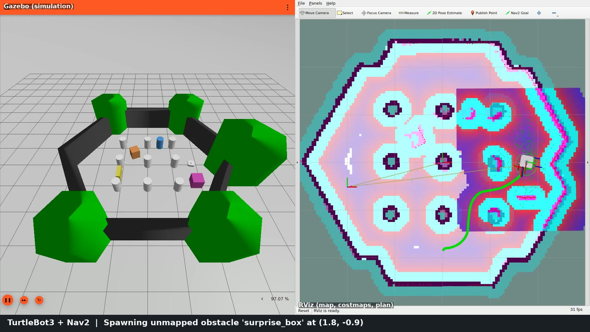
Nav2 plans on a static map (left). The Gazebo world it's driving in (right) has extra obstacles that aren't on that map. The only way the robot finds out about them is its 360° LiDAR, which feeds the obstacle layers of Nav2's costmaps in real time.
tb3_sandbox.pgm): walls and 9 pillars. Nothing else.This is the real path the robot drove, logged from Nav2's feedback at ~10 Hz. The LiDAR rays are re-simulated in your browser from each logged pose (360°, 3.5 m range), so you can see when each unmapped obstacle gets detected. Hit points on obstacles that aren't on the map turn red, like the marks in Nav2's costmap. Switch to the stock-params run to compare.
Clearance = distance from the robot's 0.22 m footprint to the nearest unmapped obstacle surface. Timing is the logged wall-clock time (sim ran at ~1.0× real time).
Everything inside the Nav2 box is stock Nav2. My job was integration, configuration and measurement. Nodes marked TUNED or MINE are where I changed or added something. Click any node.
Blue dashes are sensor data flowing in, lime dashes are velocity commands flowing out to the wheels, grey are plans and costmaps.
Recorded fully automatically inside the container (virtual display + ffmpeg, no desktop capture): Gazebo on the left, RViz on the right, a live caption from the patrol log at the bottom. Jump to a chapter, or turn on sync to drive the replay above from the video.
Couldn't load ../media/demo.mp4. Open this page from inside the repo (docs/index.html) so the relative path resolves.
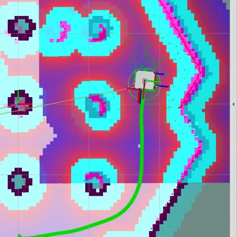
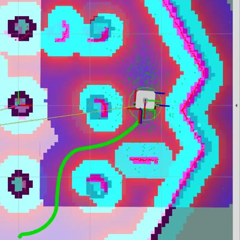
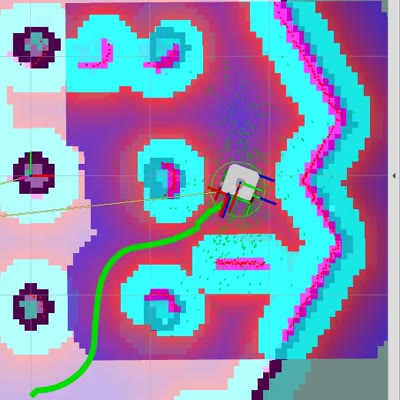
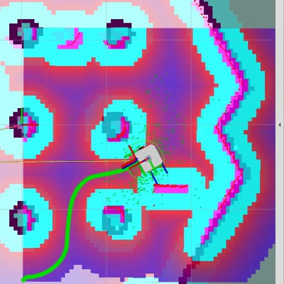
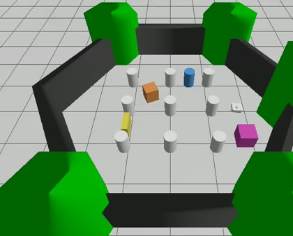
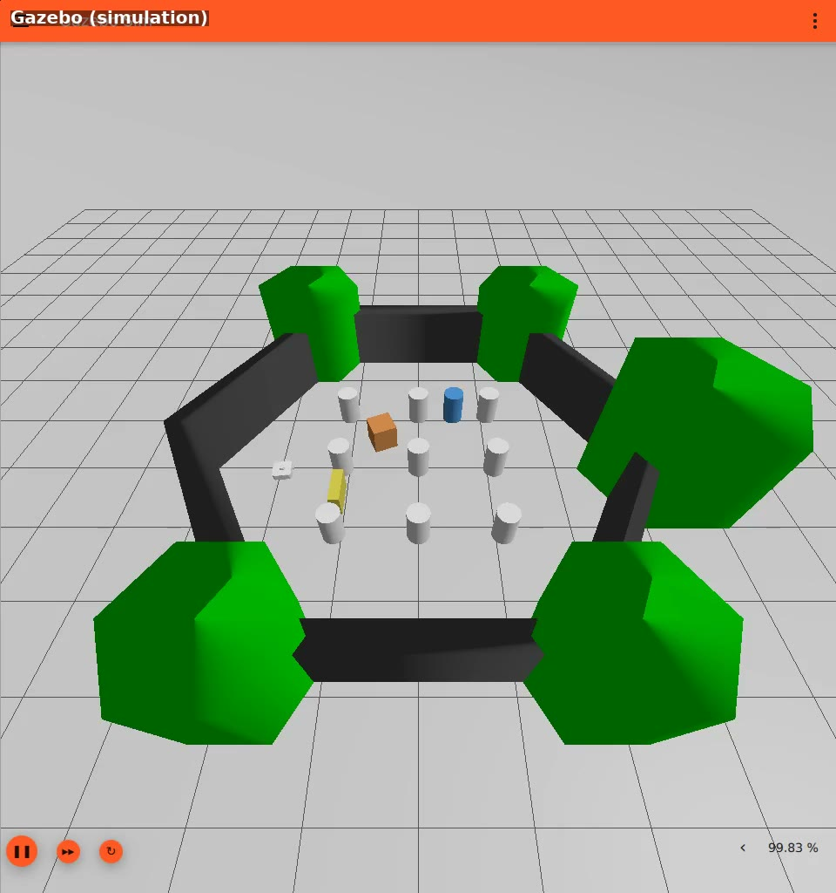
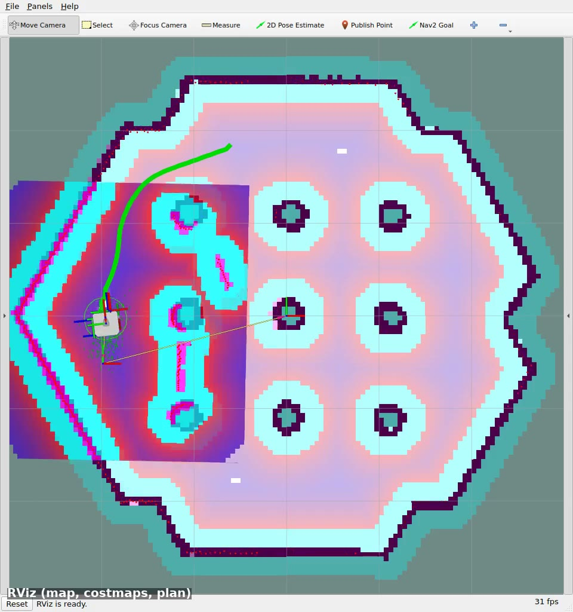
Runs 2–8 are reproducible with ./tools/headless_test.sh <config>. After every run I
plotted the real trajectory, measured clearance and read the logs instead of trusting "goal succeeded".
Two of my own conclusions didn't survive this, and both corrections are shown below. Click a plot to enlarge it.
5/5 goals, but the plot showed NavFn takes the shortest route between the pillars, so 3 of the 4 obstacles were never closer than 0.4 m to the path. The one that mattered (the barrel) got the MPPI controller stuck ("Failed to make progress"): a recovery ran and the leg took 33 s.
Fix: move every obstacle onto the paths the planner actually took in this run.
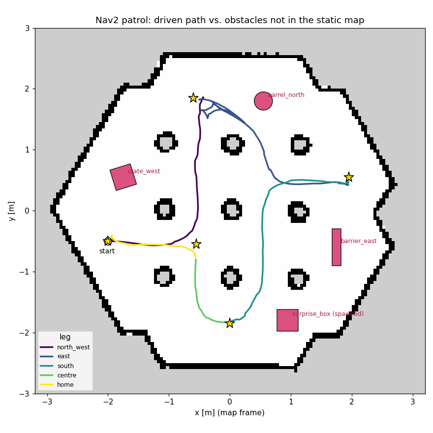
The static obstacles now force detours, but the robot took a different route on the
south leg, so the box spawned 6 s into the leg landed where it never went. The
"best" clearance of all runs here (+0.215 m) is a symptom of a broken test, not better navigation.
Fix: spawn the box once the robot is within 1.2 m of a point on its current route.
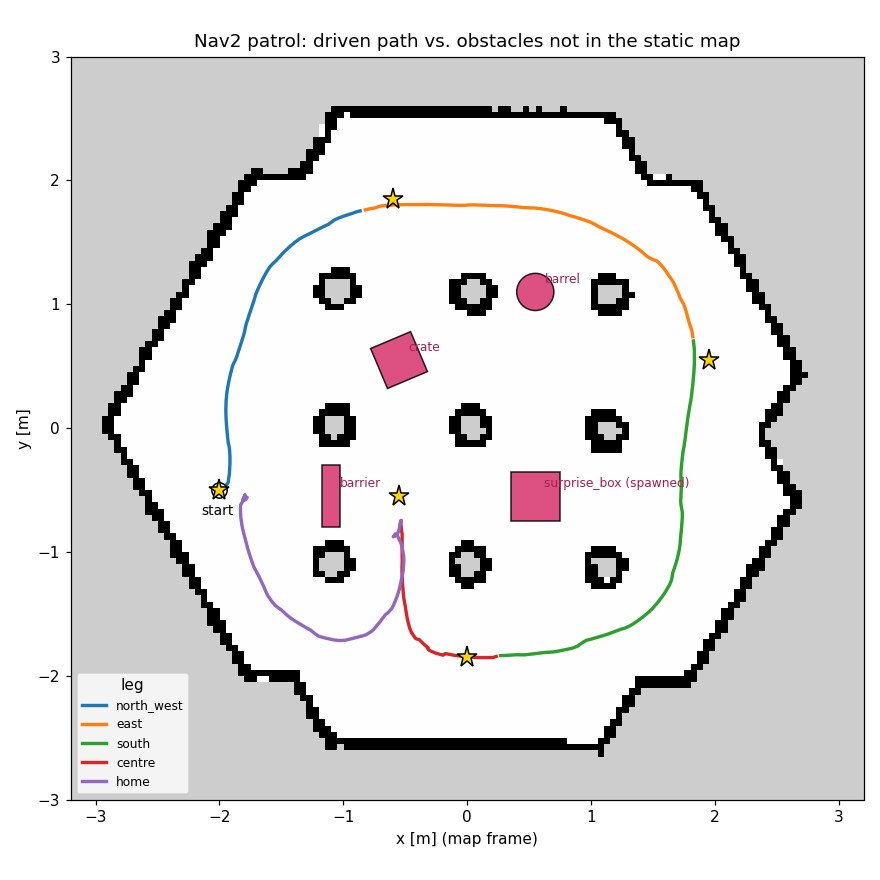
Now the box lands about 1 m ahead of the robot. It stops ~0.55 m short for 1.6–2.1 s, then sets off on
a new route through the pillars, with no recoveries and no contact. Why stop? In both runs the log shows, 0.9 s
after the spawn, collision_monitor: Robot to approach for 1.2 seconds away from collision and
Optimizer fail to compute path. At 0.5 m/s the safety layer's 1.2 s horizon is ~0.6 m, which is
exactly the stopping distance.
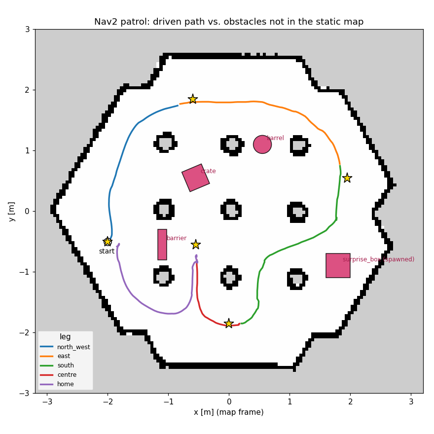
I set the speed to the real Waffle's 0.26 m/s, and in the same runs raised the local costmap to 10 Hz (later the global costmap 1 → 5 Hz). I expected the slower robot to keep more distance from the box. It didn't: clearance stayed in the same band, because it's set by costmap inflation and the route, not speed. The stall did drop to 0–0.5 s, and I credited the 5 Hz global costmap with rerouting ~1 s sooner. That was two changes too many to say what caused what.
After an independent review pointed out the confound (and that the simulated LiDAR only runs at 5 Hz), I re-ran with only the speed limits changed. Result: stall 0.0 s in both runs, and zero collision-monitor interventions. At 0.26 m/s the 1.2 s horizon is ~0.31 m, so MPPI steers away before the safety layer has to act. The speed limit explains the whole improvement. The costmap-rate changes show no effect beyond noise, so I retracted the "~1 s sooner" claim.
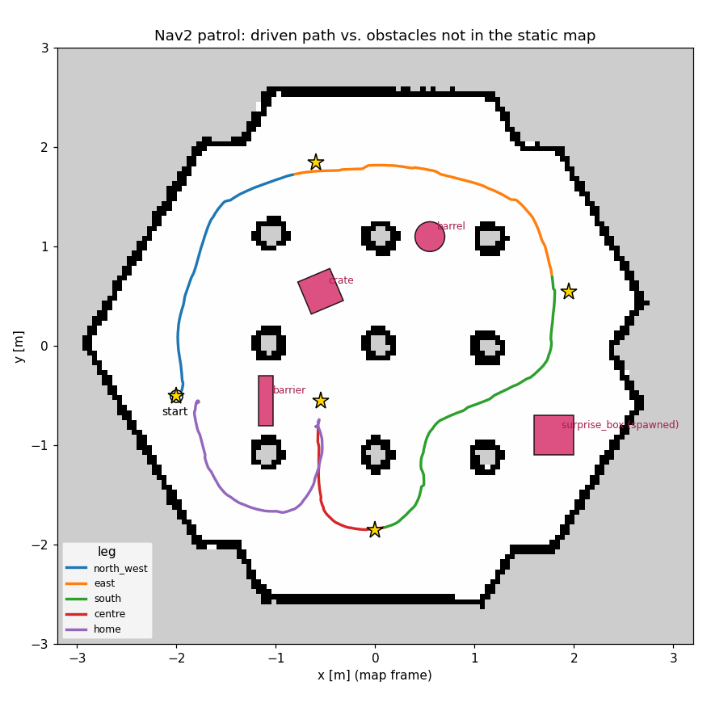
The default config with no GPU device in the container (Mesa software rendering), which is what a reviewer's VM or CI would have, also passes: 5/5 goals, no stall, +0.12 m clearance.
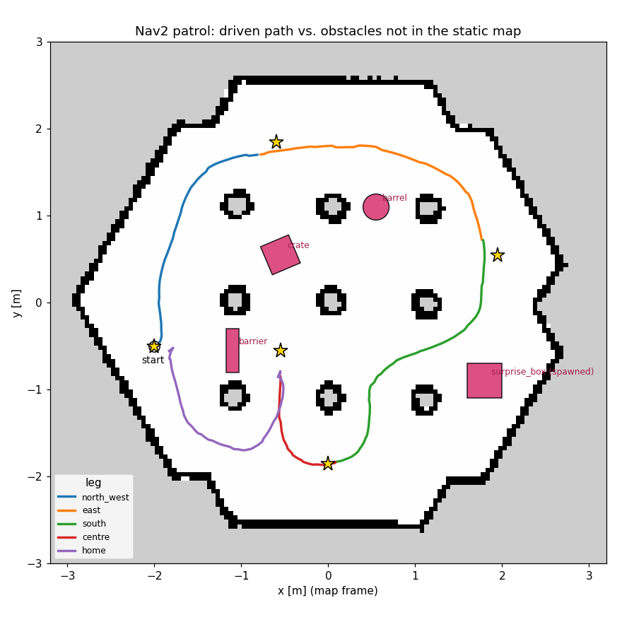
n = 2–4 runs per config, so leg-time differences of ~1 s are noise. Poses are the AMCL estimate, not Gazebo ground truth, and AMCL corrections make them jump by up to ~5 cm. The tightest clearances (+0.06 to +0.10 m with a conservative 0.24 m corner radius) are only 1–2× that, so "no contact" also rests on zero recoveries or stuck events in every run after run 0. Times are wall-clock at ~1.0× real-time factor.
nav2_params.yamlThe two costmap-rate changes are harmless but unjustified by the data. They stay in the default only because the
recorded demo used them. What I'd ship is nav2_params_exp_speed_only.yaml plus the initial pose.
| Parameter | Stock | Tuned | Evidence |
|---|---|---|---|
| MPPI vx_max / vx_min / wz_max | 0.5 / −0.35 / 1.9 | 0.26 / −0.26 / 1.82 | Real Waffle limits. Removes the collision-monitor stop (runs 2/4 vs 7) |
| velocity_smoother max/min velocity | ±0.5, ±2.0 | ±0.26, ±1.82 | Same limits after smoothing |
| local_costmap update_frequency | 5 Hz | 10 Hz | No measurable effect. LiDAR publishes at 5 Hz |
| global_costmap update_frequency | 1 Hz | 5 Hz | No measurable effect beyond noise (run 7 vs 6) |
| amcl set_initial_pose | off | on (spawn pose) | No manual "2D Pose Estimate" needed |
| inflation radius / scaling | 0.7 m / 3.0 | unchanged | No recoveries or contact with it, so no evidence to change it |
gz sim died with a segfault after "Failed to create dummy render window"./dev/dri passed in, EGL tried the NVIDIA node first (no driver in the container), so Ogre2 crashed. That meant no LiDAR, no localisation.eglinfo inside the container + mapping render nodes via /sys/class/drm/*/device/driver.docker/gpu_args.sh). Gazebo now renders on the AMD iGPU (radeonsi), with NO_GPU=1 falling back to software rendering (verified, run 8). The NVIDIA-toolkit path is untested.nav2_minimal_tb3_sim URDF points at the wrong mesh paths, and the stock RViz config subscribes to the latched /robot_description with Volatile QoS, so it never receives it.kill -INT on a background job. Non-interactive bash starts background jobs with SIGINT ignored.<gui> block in the world with a fixed camera, and a dock-free record.rviz. Previewed with single screenshots before recording.# build the image (ROS 2 Jazzy + Gazebo Harmonic + Nav2) docker build -t tb3-nav2 . # full demo: Gazebo + RViz, robot drives the patrol on its own ./docker/run.sh # headless end-to-end test with plot + clearance check -> results/<tag>/ ./tools/headless_test.sh tuned
# drive it yourself with "Nav2 Goal" in RViz ./docker/run.sh ros2 launch tb3_nav2_demo demo.launch.py patrol:=False # A/B against the untouched upstream parameters ./tools/headless_test.sh stock # re-record the demo video / rebuild this page's data ./tools/record_demo.sh && python3 tools/build_page_data.py